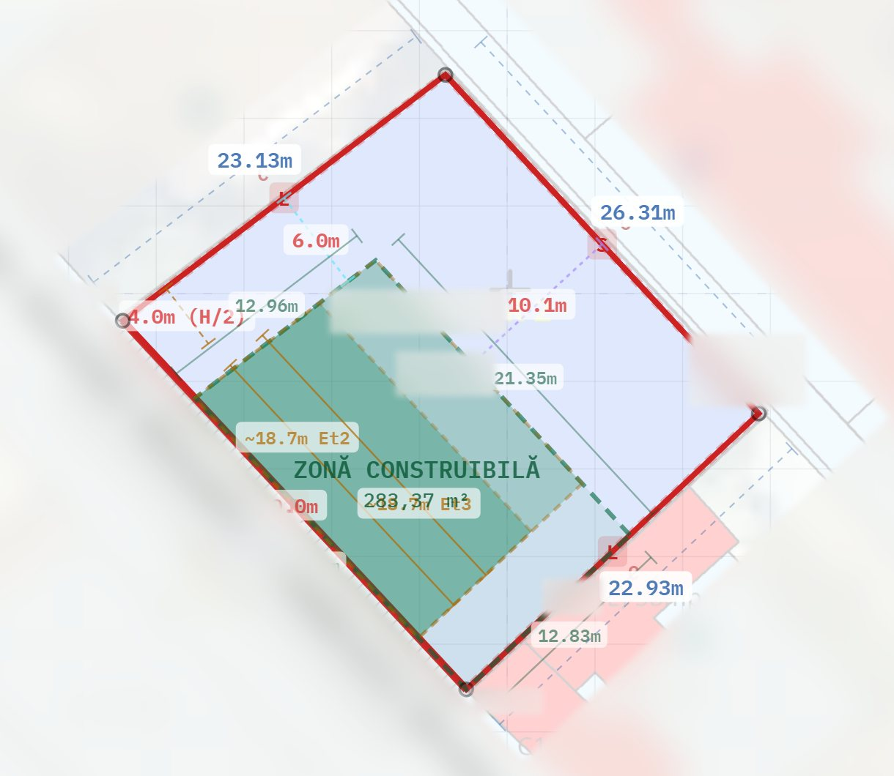
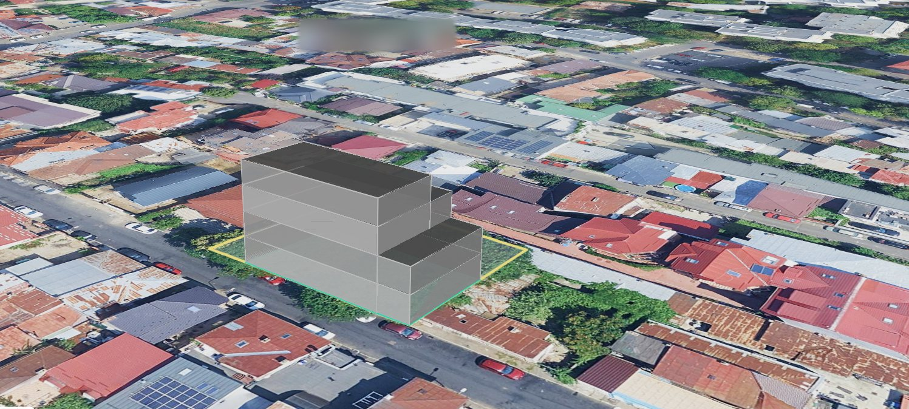

Un teren de 632 mp din Sectorul 2, analizat în septembrie 2026 pentru un grup de pe platformă. Adresa e ascunsă; cifrele sunt cele din analiză. Așa arată și analiza terenului tău.
Analiza citește regulamentul de urbanism al zonei (aici, PUZ Sector 2), desenează zona în care se poate construi, cu retragerile față de stradă și de vecini, și calculează câți metri încap pe ea.

POT înseamnă cât din teren poate acoperi clădirea; CUT, de câte ori se poate construi suprafața terenului, pe toate etajele la un loc. Fișa e un document informativ, nu o documentație de urbanism: cifrele se confirmă prin certificatul de urbanism.
Din aceeași clădire ies mai multe împărțiri. Pe terenul acesta, trei variante a câte șase apartamente, două dintre ele cu duplexuri. Pentru fiecare apartament vezi suprafața utilă și costul: partea lui din teren plus partea lui din construcție, fără nicio marjă adăugată.
Costurile sunt calculate la 1.200 € pe metru pătrat construit, un cost de referință din experiența recentă a construcției colaborative. Costul real se stabilește la ofertarea constructorului și poate să difere.
Odată cu fișa primești volumul clădirii, pus pe teren în Google Earth. Se deschide în browser, fără nimic de instalat.

E un punct de pornire pentru discuția grupului, nu un proiect.
Completează formularul cu numărul cadastral sau adresa exactă. În 3-5 zile lucrătoare primești fișa și volumul, calculate pentru terenul tău. Preț de lansare: 99 RON, TVA inclus.